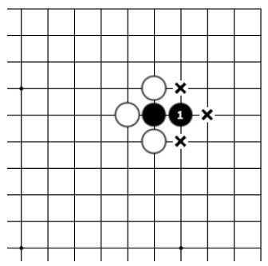
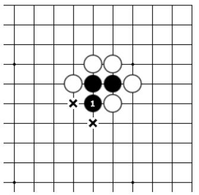
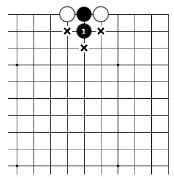
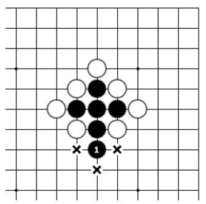
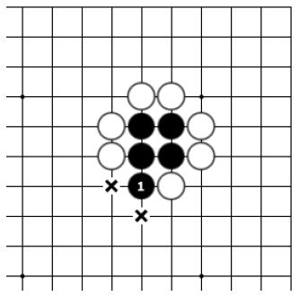

第五节 逃出被打吃的子
通过长气的方法使棋子脱离险境就叫作“逃”或“逃跑”。

图一

图二
图一：黑下1位后，被打吃的棋子变成了三口气，已经脱离险境，黑1的下法叫作“逃”或“逃跑”。
图二：黑下1位后，被打吃的棋子变成了两口气，暂时脱离险境，黑1的下法叫作“逃”或“逃跑”。

图三

图四
图三：黑下1位后，被打吃的棋子变成了三口气，已经脱离险境，黑1的下法叫作“逃”或“逃跑”。
图四：黑下1位后，被打吃的棋子变成了两口气，暂时脱离险境，黑1的下法叫作“逃”或“逃跑”。

图五

图六
图五：黑下1位后，被打吃的棋子变成了三口气，已经脱离险境，黑1的下法叫作“逃”或“逃跑”。
图六：黑下1位后，被打吃的棋子变成了两口气，暂时脱离险境，黑1的下法叫作“逃”或“逃跑”。